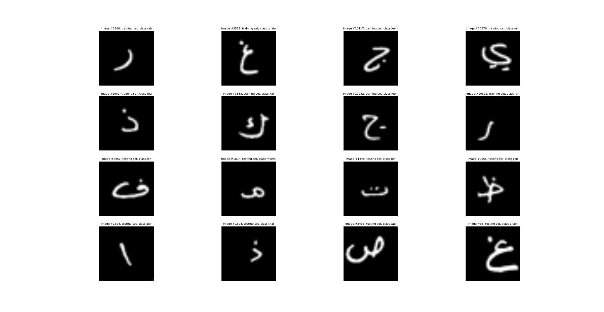

Graduation Project
Fake News Detection System - A Web Application

Project Overview: A web app using ML to detect fake news, with user accounts, admin control, and statistics.
Fake News Detection System is a web application, User can: detect the fake news and real news using ML, each user has his account and history, contact with admins. admin can manage all system, views statistics about fake and real news. I used REAST API to call the model in Laravel Project.
I participated in my project at the Industry 4.0 conference held at
Ain Shams University's Innovation and Entrepreneurship Center in
collaboration with the University of Berlin, We also conducted a television
interview with the Egyptian Channel 2
Key Features:
- Fake News Detection: ML verifies news.
- User Accounts: Personalized with history.
- Admin Control: Manage users and resources.
- Statistics: View news stats.
Technology Stack:
- Framework: Laravel, a PHP web framework.
- Machine Learning: ML algorithms (e.g., Natural Language Processing, classification algorithms).
- User Authentication: Secure user account management.
- REST API Integration: Integration with a RESTful API to access machine learning models.
- Project Management: Tools for planning, execution, and collaboration.
Skills Learned:
- Web Development: Proficiency in Laravel.
- Machine Learning: Implementing ML for news verification.
- User Authentication: Secure user accounts.
- REST API Integration: Integrating external ML models.
- Project Management: Planning and execution.
- Communication: Presentation and media interviews.
- Collaboration: Teamwork and cross-cultural communication.

Commercial banks receive a lot of applications for credit cards. Many of them get rejected for many reasons, like high loan balances, low income levels, or too many inquiries on an individual's credit report, for example. Manually analyzing these applications is mundane, error-prone, and time-consuming (and time is money!). Luckily,
this task can be automated with the power of machine learning and pretty much every commercial bank does so nowadays. In this notebook, I built an automatic credit card approval predictor using machine learning techniques, just like the real banks do.

Handwritten Arabic Recognation Using DeepLearning Algorithm(CNN)
Our Handwritten Arabic Recognition System, powered by cutting-edge Deep Learning technology, represents a significant leap forward in bridging the gap between human expression and machine understanding. This groundbreaking tool has been meticulously developed to revolutionize the way Arabic handwritten text is interpreted and processed.

A Machine Learning Project implemented from scratch (I implemented Logistic Regression From scratch),involves Data
Cleaning, Preprocessing, exploratory data analysis, and machine learning
to predict housing prices in New York.

In this project I scrape data from Amazon to analyze price data for products And I used Python (Beautiful Soup) For Collecting Data From Amazon .

The "Investigating Netflix Movies and Guest Stars in 'The Office'"
project aims to explore the fascinating relationship between the popular TV series "The Office"
and the movies available on the Netflix platform.

I have done this project through DataCamp which has taught me a history of Nobel prize winners in a visual way
The aim of the project is to find out whether the prize is biased or unbiased in terms of gender and nationality.

A GUI program that plots arbitrary user-entered function.
FunctionPlotter is a powerful and user-friendly graphical user interface (GUI) program that empowers you to effortlessly visualize arbitrary mathematical functions. Whether you're a student, engineer, scientist, or just someone curious about the beauty of mathematical expressions, FunctionPlotter is your go-to tool for exploring functions in a visually intuitive way.

Our N Puzzle Solver, built using C# and advanced algorithms, tackles the classic N Puzzle challenge. Users can input puzzle configurations and choose from multiple solving algorithms for efficient and visually guided solutions. This project combines algorithmic prowess with a user-friendly interface, offering a practical learning tool for algorithm enthusiasts and puzzle solvers.